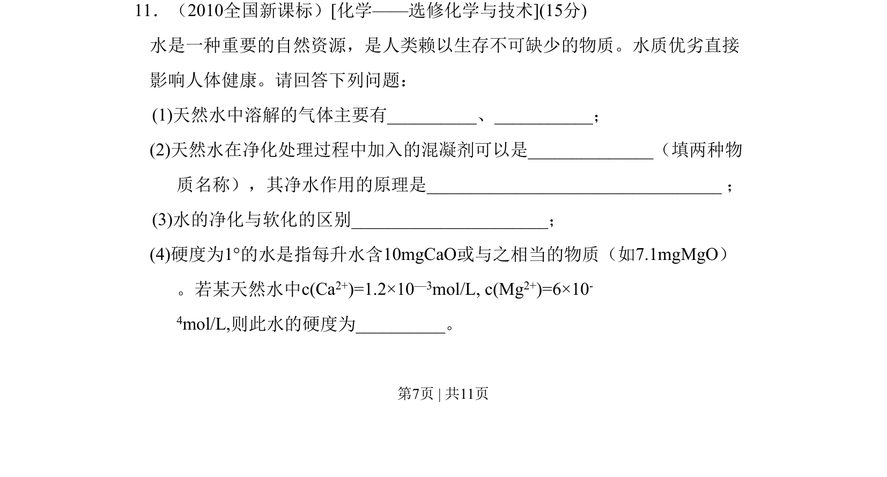
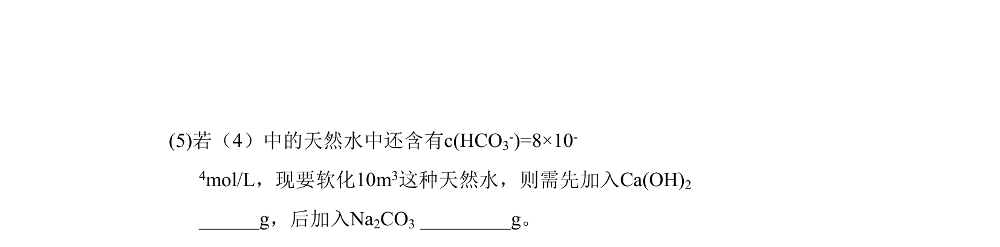
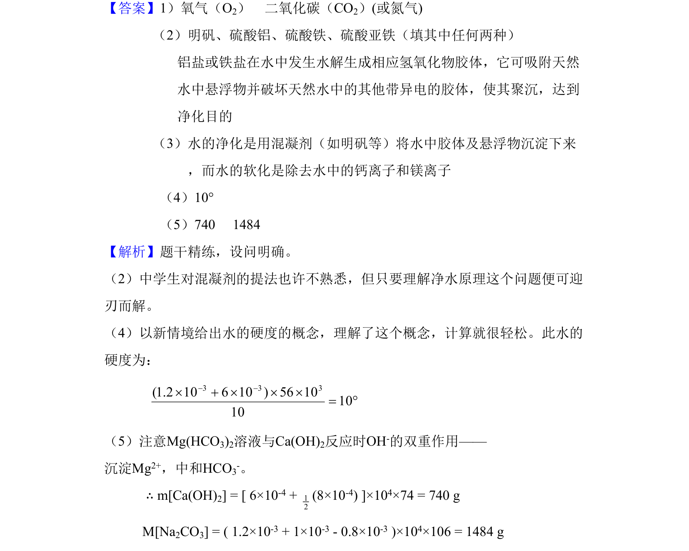

考点：混凝剂净水原理 水的硬度计算 沉淀反应 中和反应


考查净水原理、水的硬度概念与计算，以及软化水的化学反应与定量计算。

📄 原 PDF 第 7 页：
素材/真题/吉林/2008-2024·（吉林）化学高考真题/2010年高考化学试卷（新课标）（解析卷）.pdf
11．（2010全国新课标）化学——选修化学与技术 水是一种重要的自然资源，是人类赖以生存不可缺少的物质。水质优劣直接 影响人体健康。请回答下列问题： (1)天然水中溶解的气体主要有_、_； (2)天然水在净化处理过程中加入的混凝剂可以是__（填两种物 质名称），其净水作用的原理是_____ ； (3)水的净化与软化的区别____； (4)硬度为1°的水是指每升水含10mgCaO或与之相当的物质（如7.1mgMgO） 。若某天然水中c(Ca2+)=1.2×10—3mol/L, c(Mg2+)=6×10- 4mol/L,则此水的硬度为_。